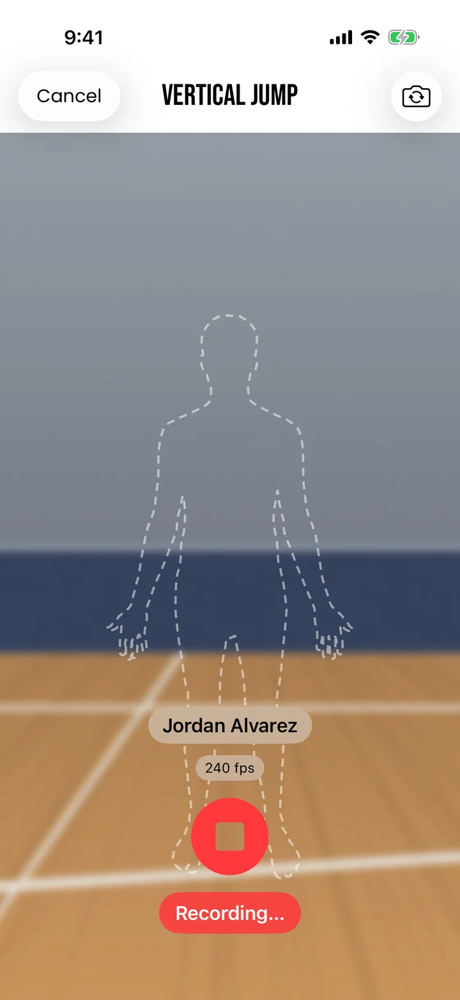
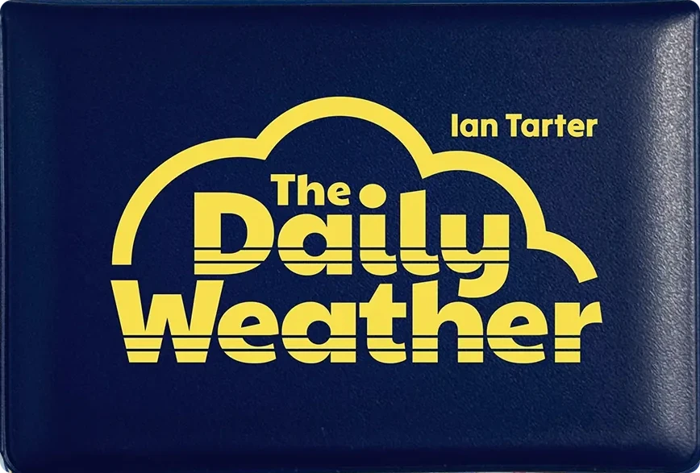

I study how people make decisions, test what I find against data, and prototype what they need.
Finishing Carnegie Mellon's MHCI in August 2027. Open to full-time UX research and data roles.
I study how people make decisions, test what I find against data, and prototype what they need.
Finishing Carnegie Mellon's MHCI in August 2027. Open to full-time UX research and data roles.

Ian Tarter
Carnegie Mellon MHCI, class of 2027
I'm finishing Carnegie Mellon's Master of Human-Computer Interaction in August 2027. Before that, I studied cognitive science at Carleton College, with a minor in data science and statistics. I worked in two labs there: one designed studies to help language learners get comfortable making mistakes, and the other measured allyship with researchers at Northwestern, UChicago and Yale.
I also design board games. Button Shy Games is publishing The Daily Weather, which raised over $29,000 from 1,800+ backers on Kickstarter.

EXACT Sports, 2026
How interviews with coaches shaped an AR app that replaces pen-and-paper testing at athletic events.
Read the case studyEmbodied Cognition Lab, 2025–26
Designing and piloting a role-playing workshop to help language learners get comfortable making mistakes.
Read the case study“What response actually helps?”
BIRDS Lab, 2025–26
Surveys of 300+ people on which kinds of sympathy actually help.
Read the case studySummer 2026
EXACT Sports
Field research with coaches, then designed, built and tested an iPhone app that measures athletes with AR and computer vision.
Summer 2026
SayKid
Tested and built voice apps in Voiceflow for ToyBot, a learning toy kids talk to.
2025–26
BIRDS Lab
Study protocols and surveys of 300+ people, run with Northwestern, UChicago and Yale.
2025–26
Embodied Cognition Lab
Helped design a role-playing language workshop, ran two pilots and led their feedback sessions.
2024–25
WizKids
A Monte Carlo simulation to pick characters for Star Trek: Captain's Chair expansions.
Summer 2024
EXACT Sports
Enrollment analysis behind a 13% rise, and a staffing algorithm for hundreds of camps.

Button Shy, 2026
A pocket-sized solo card game with a new puzzle every day. Its Kickstarter raised over $29,000 from 1,800+ backers.
Read the case study1 player, in progress
A solo campaign roguelite: uncover the minotaur's labyrinth by building it.
2–6 players, in progress
A cooperative word-guesser where you see every word but your own.
2–4 players, in progress
A partnership trick-taker where you win words and poison your opponents.
I'm looking for full-time UX research and human-centered data roles starting after I finish at Carnegie Mellon in August 2027. Publishers: ask me about Asterion, Superlatives or Alphabet Soup.